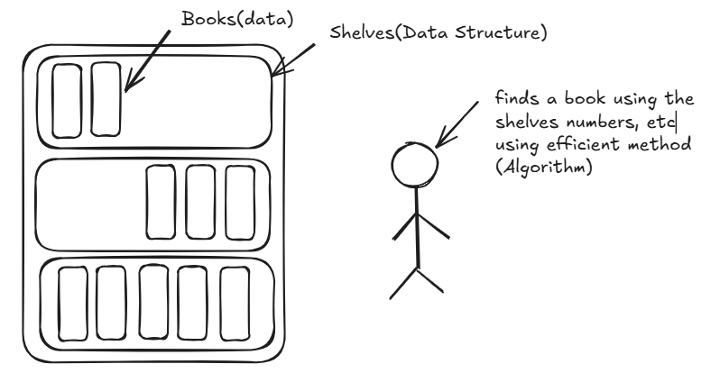
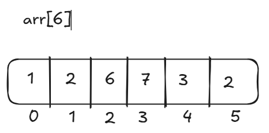
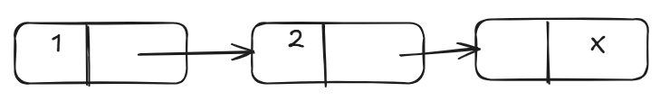
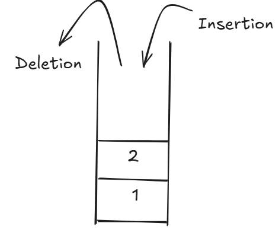
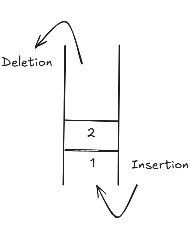
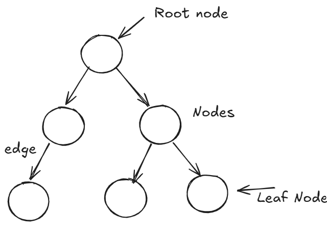
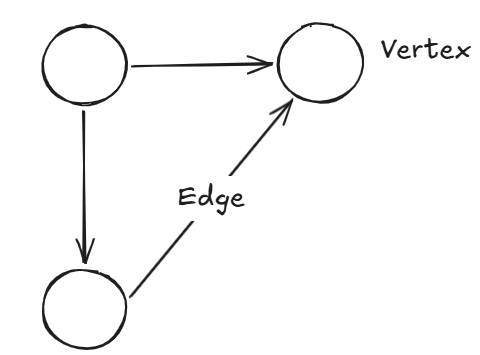

DSA stands for Data Structures and Algorithms. As the name suggest data structures are the way to organize or store data for example, consider storing books within the library shelves where book is a data and library shelves are data structure. Algorithms are the method to solve problems using data and data structures for example finding book within the library.

Apart from all the things people say about DSA on the internet, such as making code faster and more efficient, helping in technical interviews, and being useful in software development,I believe its biggest benefit is that it teaches you how to think. It helps you break complex problems into smaller subproblems, recognize patterns, and develop analytical thinking skills. So, while DSA may not always help directly, it certainly helps indirectly in many aspects of problem-solving and decision-making.
There are two types of data structure as
The data structure which stores data sequentially means one after another like students stand in line for assembly. The major linear data structures are -
Array is a collection of elements of same type in contiguous memory locations and allows us to access elements using their index. The index in array starts from zero. Traditionally, array has fixed size. You can imagine it as train coaches where train is equivalent to array and coach is equivalent to element in array.

Linked List is a collection of nodes which contains data and pointer to next node. It is stored non-contiguously in memory, hence, random access is not possible and it is dynamic in size. Imagine it like treasure hunt where each level provides clue or address of next level where level is data in node and clue is pointer to next node.

Stack follows the LIFO (Last In, First Out) principle, where the last element added is the first one to be removed. Insertion and deletion are possible only at the top of the stack. Imagine it as a pile of plates where the top plate is taken first, and so on.

Queue follows a FIFO (First In, First Out) principle, where the first element added is the first one to be removed. Insertion is done from the rear and deletion is done from the front of the queue. Imagine it like a line of people waiting at a ticket counter where the person who joins the line first gets the ticket first

The data structure which does not store data sequentially, instead data is organized in hierarchical or interconnected form, is called a non-linear data structure. Imagine it like a family tree where one person can be connected to multiple family members rather than standing in a single line.
Tree is a non-linear data structure consisting of nodes connected in a hierarchical manner. The topmost node is called the root node and each node can have multiple child nodes. Imagine it like a family tree where grandparents are connected to parents and parents are connected to children, forming a hierarchy.

Graph is a non-linear data structure consisting of vertices (nodes) and edges (connections between nodes). Unlike trees, a node can be connected to any number of other nodes. Imagine it like a social network where people are vertices and friendships between them are edges.

Algorithm is a step-by-step procedure to solve a problem or perform a task. It takes some input, processes it, and produces the desired output. A good algorithm solves the problem correctly and efficiently. Imagine it like a recipe for making a dish where each step must be followed in a specific order to get the desired result.
There can be multiple algorithms to solve the same problem, but not all of them are equally efficient. Some algorithms may take more time to execute, while others may require more memory. As the size of input grows, these differences become significant.
Imagine two students searching for a book in a library. Both eventually find the book, but one checks every shelf one by one while the other directly goes to the correct section. Although both solve the problem, the second method is more efficient.
Time Complexity and Space Complexity help us compare different algorithms and choose the one that uses less time and memory.
Time Complexity tells us how the running time of an algorithm changes as the size of input increases. It helps us compare different algorithms and choose the faster one. Imagine two students searching for a book in a library. One checks every shelf one by one, while the other directly goes to the correct section using shelf numbers. The second student takes less time, so his method has better time complexity.
Space Complexity tells us how much memory an algorithm needs as the size of input increases. Some algorithms require extra memory to store temporary data while solving a problem. Imagine you are packing clothes for a trip. One person uses a small bag and packs efficiently, while another uses three extra bags for the same clothes. The first person uses less space, so his method has better space complexity.
DSA forms the foundation of problem-solving in computer science. While data structures help organize data efficiently, algorithms help process that data effectively. Understanding these concepts is the first step toward becoming a better programmer and software engineer.